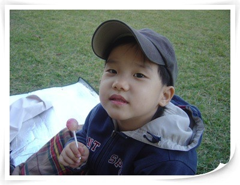
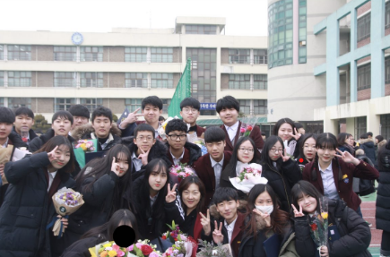
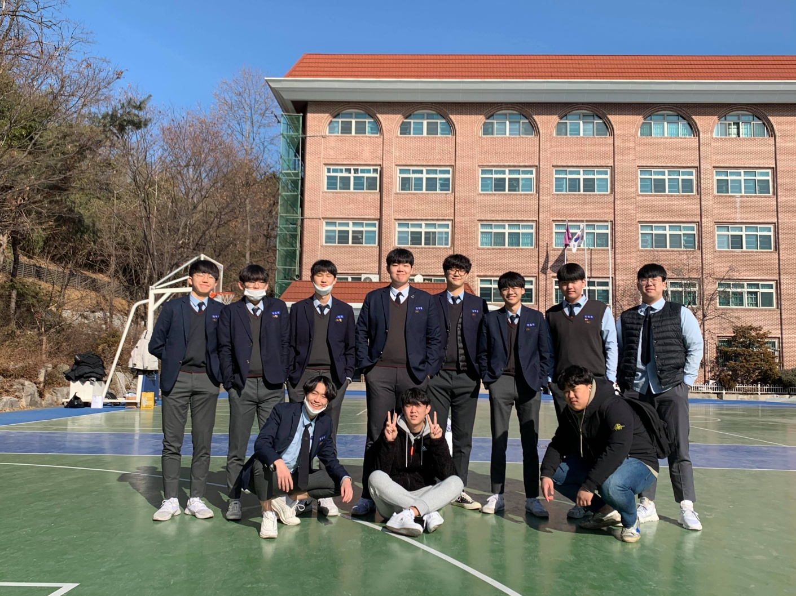
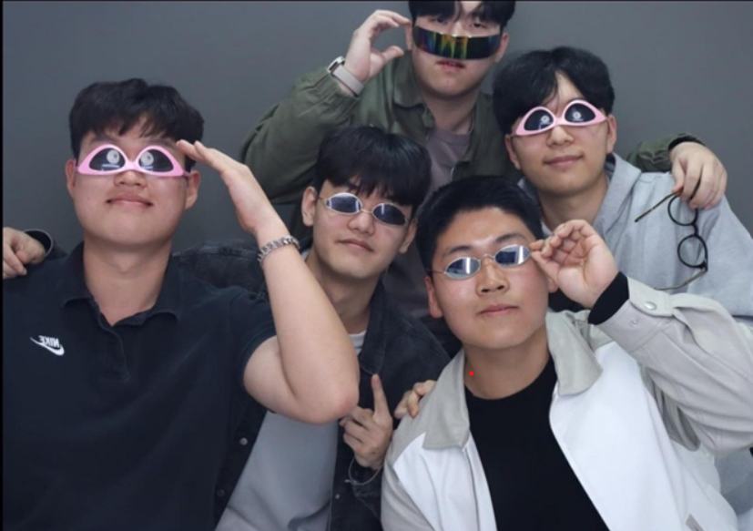

About Me
안녕하세요 저는 2002년 4월 15일에 쌍둥이 동생과 함께 태어났습니다. 서울 양천구 목3동에서 평생을 살아왔습니다. 아래에서 저의 학창시절을 보여드리겠습니다.
어린이
등촌유치원과 등촌초등학교를 나왔으며 현재까지도 좋아하는 농구와 기타 연주를 이때 시작하였고 좋은 친구들을 많이 만나 지금도 해외여행을 같이 갈 정도로 잘 지내고 있습니다
양동중학교
2015년도 3월에 입학하였고 2018년도 2월에 졸업하였습니다. 밝은 친구들을 만나 저의 인격생성에 좋은 영향을 끼친 시절이었습니다.
대일고등학교
2018년도 3월에 입학하고 2021년도 2월에 졸업하였습니다. 취미를 같이 하는 친구들 많이 만나 성인이 되어서도 꾸준히 마나면서 여행도 다니고 있습니다.
그 이후(강원대학교)
1년 재수 후에 강원대학교에 입학하였습니다. 여러가지 취미생활과 아르바이트로 여러가지 경험을 쌓고 있으며 학우 친구들과 즐거운 학교 생활을 즐기고 있습니다.